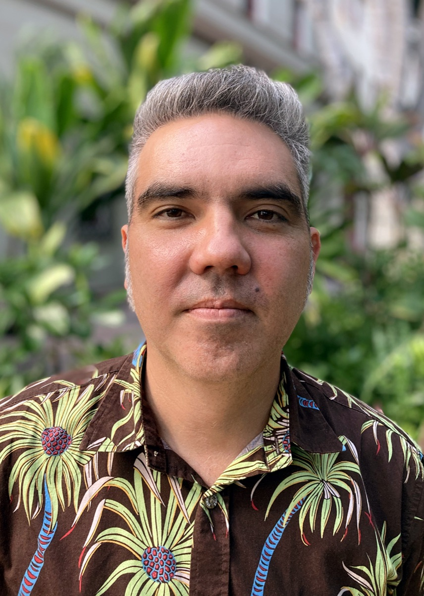

Anthony Amador
Director of Development
anthony@hiappleseed.org

Will is an experienced advocate, community organizer, and all-around policy wonk, who has dedicated his professional career to advancing equitable public policy for communities across the United States.
A graduate of Kamehameha Schools and proud son of Kalihi Valley, Will spent the last 20 years on the U.S. continent working as a community organizer, policy advocate (and sometimes nightclub doorman) in both New York City and the San Francisco Bay Area.
For seven years, Will served as the Senior Director of Policy and Government Affairs at United Way Bay Area, where he worked to increase the minimum wage, improve access to healthcare for undocumented immigrants, and expand tax credits for working families. Having returned home in 2021, Will has had the opportunity to serve in the Hawaiʻi State Governor's Office and the State Department of Budget and Finance before joining Hawaiʻi Appleseed. Will holds a bachelor's degree in history from New York University and a master's in urban policy analysis and management from The New School.
We're always looking for collaborators, partners, and advocates who want to help build a Hawaiʻi that puts its people first.